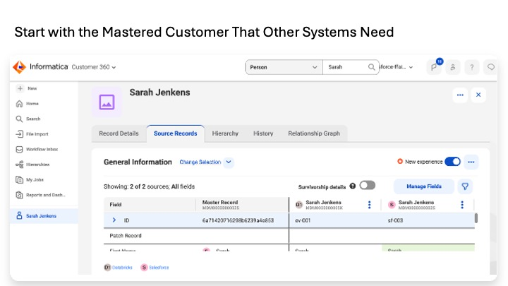
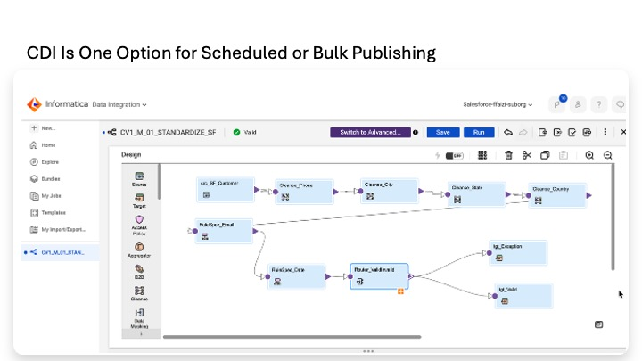
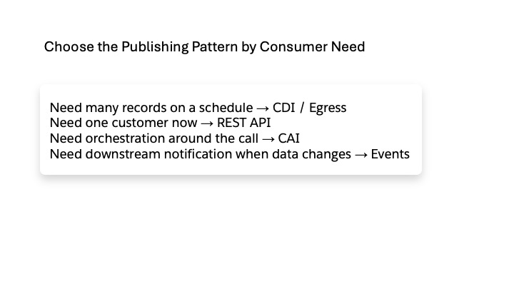

Lab 6
Lab 6 — Integration Patterns for Publishing MDM Data
v2 — Aug 8, 2026. Conceptual lab. Four ways to get mastered data out of Informatica Customer 360 SaaS, with use cases, tradeoffs, and a security and governance lens.
Master Data Management (MDM) has created a trusted golden customer record by matching and merging source records that belong to the same person. That mastered record now lives inside Informatica Customer 360 SaaS.
Creating the golden record is only half of the architecture. Other systems still need to use it. A Salesforce application may need one customer immediately. A warehouse may need the full mastered population every night. A downstream system may need to know within seconds when MDM changes a customer.
Learn the main patterns for getting mastered data out of Informatica, and choose the pattern that matches the consumer's volume, timing, and ownership requirements.
In short: MDM creates the trusted customer. Lab 6 explains how other systems receive or retrieve that trusted data.
Need many or all mastered records on a schedule? -> CDI batch push -> Business 360 Egress for a production-managed bulk/delta pattern Need one customer right now? -> Customer 360 REST API Need logic around that real-time lookup? -> CAI orchestration Need downstream systems notified when MDM changes? -> Business 360 Events
| Pattern | Who initiates | Direction | Best fit |
|---|---|---|---|
| 1. CDI batch push | Informatica | MDM → target | Bulk publishing of many or all masters on a schedule. |
| 2. REST API lookup | Consumer | Consumer → MDM | On-demand access to one or a small number of golden records. |
| 3. CAI orchestration | Consumer calls CAI | Consumer → CAI → MDM | Real-time access that needs search, decision logic, reshaping, or a stable service contract. |
| 4. Business 360 Events / Egress | Informatica | MDM → target | Events for near-real-time change propagation; Egress for production-managed bulk and incremental publishing. |
The four patterns answer different questions. CDI and Egress are about moving populations of mastered data. REST APIs are about retrieving a customer when a consumer needs one. CAI adds reusable logic around API-based access. Events notify downstream systems when MDM changes.
The important skill is architectural selection, not reproducing one narrow implementation. Each pattern has a different initiator, latency model, volume profile, monitoring model, and security boundary. Those distinctions remain useful even when the exact product screens change.
CD Is typically used for scheduled, bulk batch data movement (e.g., syncing 1 million records to Databricks nightly).
CDI (ETL/ELT): Optimized for bulk data processing. It can move 50 million rows efficiently using bulk APIs and "pushdown optimization" (translating mappings into raw SQL that executes inside Databricks).
MuleSoft (ESB/API): Optimized for event-driven, row-by-row message routing. If you try to push 50 million rows through MuleSoft into a data warehouse, you will choke its memory, hit API rate limits, and fail.
Use Cloud Data Integration (CDI) when Informatica needs to publish many or all mastered records to a target on a schedule.
Informatica Customer 360 Golden records | | CDI mapping + Mapping Task v Target system Salesforce / Databricks / another downstream store
CDI is Informatica's data-integration engine. A mapping reads mastered data, transforms or selects the required fields, and writes them to a target. A Mapping Task runs that mapping on a runtime environment, either on demand or on a schedule.
For MDM data, the source can be the Business 360 Flat Endpoint (FEP) connector or another supported source that exposes the mastered records. The target could be Salesforce for write-back, Databricks for an analytical mastered dataset, or another downstream platform.
At 2:00 AM, a CDI job reads the mastered Person population. For Sarah, it updates the Salesforce customer record with MDM metadata such as MDM_Customer_ID__c = MDM0000000002S, MDM_Master_Status__c = Active, and a last-synchronized timestamp. When users open Salesforce in the morning, the MDM identifier is already stored on the record.
A separate CDI flow could publish mastered data to another analytical target if the architecture requires it. For Lab 7 specifically, the golden customer is sent directly to Salesforce Data 360 through the Data 360 Ingestion API rather than being staged in Databricks.
• You need to publish many or all master records.
• The target can tolerate scheduled freshness such as nightly or hourly.
• The target needs the mastered information stored locally for reports, workflows, or downstream processing.
• The Informatica team should own scheduling, monitoring, retry, and audit.
• Connectors exist for both the mastered source and the target.
• A user needs one customer's current golden record immediately.
• You need search-before-create before a user saves a new record.
• The volume is tiny and a batch job would add unnecessary overhead.
The source document notes that CDI credentials are stored in IDMC connections and that Mapping Task executions appear in Informatica job history. That gives the Informatica team a central operational record of scheduled publishing activity. For Secure Agent deployments, the document also notes the outbound HTTPS communication model.
Pattern 1 in one sentence: Informatica pushes a large set of mastered records to a target on a schedule.
Use the Customer 360 REST APIs when a consuming application needs a golden customer on demand rather than waiting for the next scheduled publish.
Salesforce / application / service | | HTTPS request v Informatica Customer 360 REST API | v One golden customer returned as JSON
The consumer calls Informatica over HTTPS. The response contains the mastered customer fields, and the consumer decides whether to display the result, use it in logic, or store selected values locally.
Two API operations matter most in the source lab:
• Search API — find the Person using an attribute such as email when the consumer does not yet know the MDM Business ID.
• Retrieve by ID — retrieve the Person directly using the permanent MDM Business ID after it is known.
A Salesforce service agent opens Sarah's record and invokes a 'Get Golden Customer' action. Salesforce calls Informatica using a Salesforce Named Credential. Informatica returns Sarah's mastered profile as JSON, and Salesforce displays it. Nothing is stored on the Salesforce record, so each request retrieves the current master.
The same API pattern can also persist the result. A Salesforce Flow can search Informatica when a Contact is created or updated, receive Sarah's MDM Business ID, and write MDM_Customer_ID__c = MDM0000000002S onto the Salesforce record.
Important distinction: A real-time API call does not mean the result must remain transient. The consumer can retrieve the value and store it. That can produce the same stored MDM-ID end state as a CDI push; the difference is who initiated the update and where the operational control lives.
• A consumer needs the current golden record immediately.
• The consumer works with one or a small number of records at a time.
• You need search-before-create.
• The consuming platform should control when the lookup occurs.
• The consumer wants to display mastered data without creating another local copy, or wants to persist only selected values such as the MDM ID.
• You need to publish hundreds of thousands or millions of mastered records.
• The consumer would have to build its own change detection, pagination, retry, and bulk scheduling.
• The interaction requires substantial multi-step orchestration; that is where CAI can help.
Because the consumer initiates the request, consumer-side credentials and logs become part of the audit trail. For Salesforce, the source lab uses Named Credentials / External Credentials rather than embedding secrets in Apex or Flow.
Pattern 2 in one sentence: The consuming application asks Informatica for the golden customer when it needs that customer.
CAI (Cloud Application Integration) is a workflow orchestration and API engine (Informatica's equivalent to MuleSoft or Dell Boomi). It can make outbound REST calls (like Apex callouts), host inbound REST endpoints, and execute multi-step logic (e.g., call System A, transform JSON, call System B, return response).
Note: CAI, another integration capability in Informatica is designed for transactional, real-time API calls (e.g., fetching 1 record on-demand).
Use Cloud Application Integration (CAI) when real-time access requires more than one simple API call or when multiple consumers should use one stable business service.
Consumer | v CAI process search -> decide -> retrieve -> reshape -> return | v Customer 360 APIs
CAI is Informatica's workflow and application-integration service. A CAI process can call Customer 360 APIs, apply decision logic, transform the response, call other services, handle errors, and return a controlled response to the caller.
The mastered data still comes from the Customer 360 APIs. CAI's purpose is to centralize the logic around those calls and expose a reusable operation to consumers.
Salesforce sends CAI a simple request containing Sarah's email. CAI searches Customer 360, handles zero, one, or multiple matches, retrieves the master when appropriate, optionally checks another service such as a preference center, and returns a Salesforce-friendly response.
Request: email = sarah.jenkins@gmail.com CAI: 1. Search Customer 360 2. Decide what to do with 0 / 1 / many matches 3. Retrieve the master when appropriate 4. Reshape the response 5. Return one stable service response
A consumer can call one operation such as GET_GOLDEN_CUSTOMER without needing to know Informatica's internal endpoint structure or Person model.
• The interaction has search, fallback, branching, or multiple-match logic.
• You want to hide Informatica-specific API details behind a stable service contract.
• Several consumers need the same operation.
• You want centralized monitoring and governance of the service.
• The process may also call other systems before returning the response.
• A direct retrieve-by-MDM-ID call is enough; the REST API is simpler.
• You need bulk publishing; use CDI or Egress.
• The additional CAI runtime and operational footprint is not justified by the logic or governance need.
CAI centralizes the service contract and monitoring. The source lab also notes that CAI processes can be managed through Informatica API-management capabilities for lifecycle and governance. The tradeoff is an additional platform component to operate.
Pattern 3 in one sentence: The consumer still gets MDM data in real time, but CAI owns the multi-step logic and returns one controlled service response.
Pattern 4 contains two MDM-initiated production mechanisms. They solve different timing problems, so they should be understood separately.
Customer 360 master changes | | Event v Downstream subscriber(s) receive the change near real time
When a master record changes because of an update, merge, or delete, Business 360 can emit an event. A subscribed downstream service receives the notification without polling MDM on a schedule.
At 10:15 AM, a support agent merges two customer records in Customer 360. Business 360 emits a Person-master change event. A downstream subscriber receives it and updates its local state. If Salesforce participates through an integration or event layer, it can react to the same change.
• Downstream systems must react within seconds or minutes when MDM changes.
• Polling or waiting for a nightly/hourly job is not acceptable.
• Several subscribers may need to react to the same master-data change.
Business 360 Egress Job | v Taskflow / CDI mapping | v Target system(s)
Egress uses Business 360's publishing controls around a CDI taskflow. The source lab describes the Business 360 Flat Endpoint (FEP) connector as the mastered-data source, with the egress job defining the extraction context.
The egress configuration can distinguish master versus source records, active versus deleted records, full versus incremental extraction, and the business-entity scope.
At 2:00 AM, an Egress job for the Person business entity runs an incremental extract of active master records. The taskflow then publishes the selected mastered data to its configured targets, with the run monitored from Business 360 Console.
For Salesforce Data 360, the revised Lab 7 architecture uses a direct publish to the Data 360 Ingestion API rather than staging golden records in Databricks. An Informatica-side scheduled process can therefore use the egress/CDI orchestration layer to deliver the mastered payload to that API.
• You need production-managed bulk or incremental publishing from Business 360.
• Deletion state, full-versus-delta extraction, and centralized operational control matter.
• The publishing process has moved beyond a small workshop mapping and needs a durable MDM operations model.
• A consumer needs to ask for one customer on demand; use REST API or CAI.
• The deployment is small enough that production egress administration would add more overhead than value.
Events provide a time-stamped record of master-data changes and downstream propagation. Egress centralizes scheduled publishing under Business 360 operational controls. The source lab also frames Egress as the more production-oriented form of MDM-initiated bulk publishing.
Pattern 4 in one sentence: Events propagate MDM changes quickly; Egress manages production bulk and incremental publishing.
| Situation | Recommended pattern | Why |
|---|---|---|
| Nightly refresh of a very large Salesforce population with current MDM IDs | CDI batch push or Egress | Bulk population. Scheduling, retry, and pagination belong in a managed publishing job. |
| Service agent opens Sarah and needs the current golden profile now | REST API | Single record, on demand, freshness matters. |
| New Salesforce lead: check whether the person already exists before saving | REST API or CAI | Use REST for a simple search. Use CAI when the search has fallback, multi-key, or branching logic. |
| Publish a daily mastered dataset to Databricks for BI/analytics | CDI or Egress | Databricks is the analytical destination; scheduled bulk publish fits. |
| Sarah's master is merged and downstream systems must react within seconds | Business 360 Events | Change propagation should be event-driven rather than scheduled. |
| Populate Salesforce Data 360 with the mastered customer population | Informatica-side scheduled publish using CDI/Egress orchestration to the Data 360 Ingestion API | Lab 7 uses direct API ingestion for golden identity; Databricks remains the zero-copy behavioral source. |
| Mobile app, portal, and Salesforce all need the same governed 'get golden customer' operation | CAI | One reusable service contract can hide Informatica-specific API details. |
| One-off lookup of a small list of customers | REST API, possibly batched | Small volume does not justify a standing bulk publishing job. |
| Salesforce needs the MDM ID stored permanently on the record | CDI push or REST API + persist | Either direction can create the same stored field; ownership and timing decide the pattern. |
Informatica-initiated publishing CDI / Egress / Events -> Informatica decides when data moves Consumer-initiated access REST API / CAI -> the consuming application decides when it needs data
That initiator determines where scheduling, credentials, retries, monitoring, and operational accountability primarily live.
There is no single publishing mechanism that is correct for every consumer. The choice depends on how much data is moving, how quickly it must be available, and which platform should control the interaction.
Many records + schedule -> CDI One customer + immediate need -> REST API Real-time + business logic -> CAI Master changed + notify now -> Events Production bulk / delta -> Egress
The same enterprise can use several of these patterns at once. A nightly Informatica publish can keep Salesforce metadata fields synchronized while a service screen still performs a real-time API lookup for the freshest golden profile.
In short: Choose the publishing pattern from the consumer need, not from the product feature you happen to know best.
For CDI, Egress, and Events, Informatica initiates the movement. For REST and CAI, the consuming application initiates the request. That distinction determines where credentials are owned and where the first operational audit trail is expected.
The source lab places Informatica-side credentials in IDMC connections. For Salesforce consumers, it uses Named Credentials / External Credentials rather than embedding secrets in Apex code or Flow constants.
Bulk patterns are managed as jobs and can be monitored and retried as a publishing unit. Consumer-initiated patterns are request-oriented and fit naturally with application-side monitoring. Events add event-level delivery evidence.
REST and CAI are suited to per-record or small-volume access. CDI and Egress are suited to population-scale movement using the target's bulk capabilities where available.
Every pattern can limit the fields that leave MDM. Data minimization should be explicit in mappings, API responses, CAI reshaping, and Egress configuration.
The source lab's write-back principle is conservative: when updating source systems such as Salesforce, publish MDM metadata such as business ID, master status, and synchronization status rather than overwriting the source system's raw business data. That keeps the MDM identity decision visible without turning the publishing process into an uncontrolled source-data correction mechanism.
Security summary: MDM is authoritative for mastered identity and metadata about that identity. Publishing should not automatically become permission to overwrite every business field in source systems.

Lab 6 begins after MDM has already established the customer identity. The question is no longer how to match Sarah; it is how another application should obtain or receive this trusted master, including the permanent MDM Business ID and the required mastered attributes.

This is the Lab 4B Salesforce standardization mapping, not an MDM publishing flow. It is shown here only to make the CDI integration engine tangible: Lab 6 evaluates using the same service for scheduled or bulk publishing when that pattern fits the consumer requirement.

There is no single correct way to distribute master data. Use CDI or Egress when many records must move on a schedule, a REST API when an application needs one customer now, CAI when orchestration is required around the call, and Events when downstream consumers need to react to changes.
Lab 7 takes one downstream consumer — Salesforce Data 360 — and applies the publishing decision to an activation architecture.
Informatica MDM Golden Customer | | Data 360 Ingestion API v Salesforce Data 360 ^ | Zero-copy federation | Databricks engagement + transactions
The golden customer is published directly from Informatica into Data 360. Databricks is used separately for zero-copy engagement and transaction data. Data 360 then combines trusted identity with behavior for Unified Individual, insights, segmentation, and downstream activation.
Lab 8 changes perspective again. It catalogs the Salesforce and Databricks technical assets, brings Informatica integration metadata into the governance catalog, associates technical fields with common business meaning, and inspects lineage.
The transition: Lab 6 chooses how mastered data is shared. Lab 7 activates it. Lab 8 makes the technical landscape understandable and governable.
The main body deliberately keeps the architecture easy to scan. This appendix retains lower-level details from the source Lab 6 for readers who need implementation or architecture-review depth.
• Search API is used when the consumer does not yet know the MDM Business ID. The source lab's example searches Person by email and can return zero, one, or multiple candidates.
• Retrieve-by-ID is used after the permanent MDM Business ID is known. The source lab treats this as safer than repeatedly searching on mutable or potentially shared attributes such as email.
• A consumer can either display the returned master without storing it or persist selected values such as the MDM Business ID on its own record.
• For small one-off lists, the source lab also notes that a batched REST approach or an existing Match and Export capability may be more appropriate than building a standing bulk-integration process.
The source lab describes CAI as a process running on Informatica's Process Server. A published CAI process can itself be exposed as an HTTPS endpoint. The CAI process can authenticate to Customer 360, search, branch on zero/one/multiple results, retrieve the full master, call another service, reshape the response, and return a stable contract.
Illustrative response retained from the source lab:
{
"found": true,
"mdmId": "MDM0000000002S",
"firstName": "Sarah",
"lastName": "Jenkens",
"email": "sarah.jenkins@gmail.com",
"consented": true
}
The source lab also notes that CAI processes can sit behind Informatica API-management capabilities for lifecycle, versioning, and formal service contracts. The tradeoff is the additional runtime and operational footprint.
The source lab describes Egress as a Business 360 operational wrapper around a CDI taskflow that reads mastered data through the Flat Endpoint (FEP) connector. Its value is the extraction context and MDM operations model rather than a different transformation engine.
| Egress control | Source-lab example |
|---|---|
| Record scope | Master records rather than source records |
| State | Active, with the ability to account for deletion state |
| Extract style | Full or incremental / delta |
| Entity scope | Business entity such as Person |
| Execution | Taskflow / CDI mapping invoked and monitored through Business 360 Console |
| Pattern | Primary monitoring / audit surface described |
|---|---|
| CDI batch push | IDMC Data Integration job history / My Jobs |
| Direct REST from Salesforce | Salesforce application logs, Flow/Apex error handling, field history as configured |
| CAI | CAI monitoring and Informatica API-management logs where used |
| Business 360 Egress | Business 360 Console job history |
| Business 360 Events | Event-level delivery / propagation records in the event integration path |
The source lab separates per-record access from population-scale movement. REST and CAI are positioned for on-demand interactions; CDI and Egress are positioned for high-volume publishing and can use target bulk APIs where available. Events address change propagation rather than population retrieval.
The source lab deliberately limits workshop write-back to MDM metadata fields such as business ID, master status, and synchronization status. It does not use publishing as permission to overwrite source-system business fields such as name, email, or phone. This makes the integration easier to reverse if an MDM merge or downstream publish must be corrected.
Preserved design principle: The publishing mechanism determines how mastered information moves. A separate data-governance decision determines which fields are allowed to move.
Trusted Data Foundation Workshop